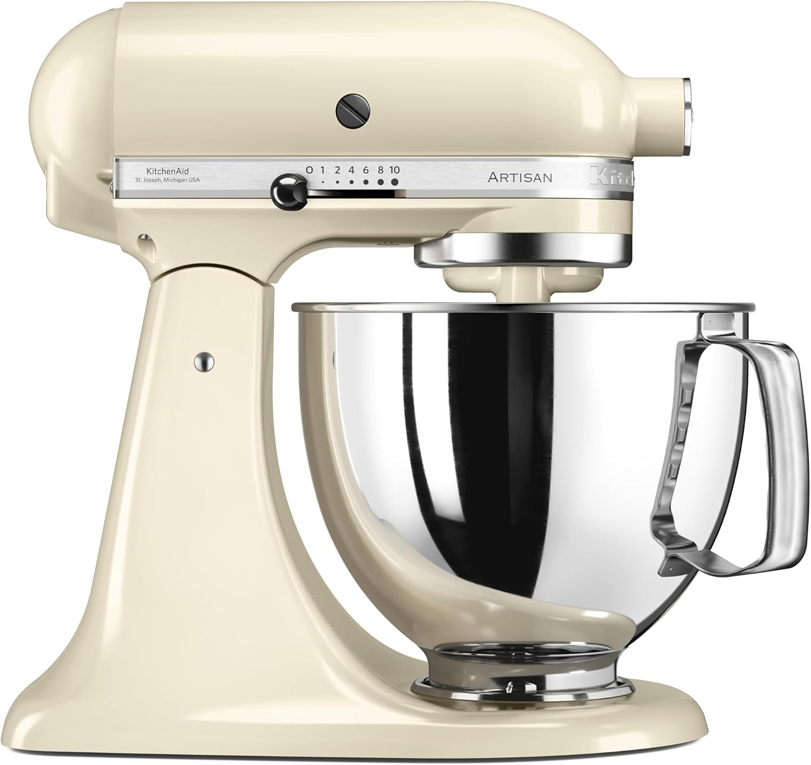

Invierte una vez y hornea para siempre: La clave del éxito en repostería profesional
Si has llegado hasta aquí, es porque sabes que una batidora de mano ya no es suficiente. Tu negocio o tu pasión exigen una máquina robusta, potente y, sobre todo, duradera. Elegir la batidora de pie adecuada es el 50% del éxito en masas, merengues y cremas. Analizamos las tres reinas del mercado para que hagas la mejor elección.
KitchenAid Artisan
El icono de la repostería. Potencia de transmisión directa y un ecosistema de accesorios que la hace versátil y duradera.
Comprar KitchenAid ArtisanKenwood Chef Titanium

Potencia bruta y gran capacidad (6.7L). Ideal para profesionales y grandes lotes de masas pesadas como panadería.
Comprar kenwood Chef TitaniumSmeg SMF03

Diseño retro de los años 50 con 800W de potencia. Perfecta para quienes priorizan la estética en la cocina.
Comprar Smeg SMF03Tabla Comparativa Rápida (Las 3 Reinas de la Repostería)
| Característica | KitchenAid Artisan | Kenwood Chef Titanium | Smeg SMF03 |
|---|---|---|---|
| Potencia (W) | 300W (Movimiento Planetario) | 1500W (Motor de Alta Velocidad) | 800W (Diseño Retro) |
| Capacidad (L) | 4.8 Litros | 6.7 Litros (Ideal para grandes lotes) | 4.8 Litros |
| Material Bowl | Acero Inoxidable/Cerámica | Acero Inoxidable Pulido | Acero Inoxidable |
| Punto Fuerte SEO | Durabilidad y Accesorios Únicos. | Potencia y Capacidad para Panadería. | Estética y Variedad de Colores. |
|
|
|
||
| Ver Precio | Comprar KitchenAid | Comprar Kenwood | Comprar Smeg |
KitchenAid Artisan: La Leyenda del Diseño y la Versatilidad
La KitchenAid no es solo una batidora, es un ecosistema. Su motor de transmisión directa, aunque con menor potencia nominal (300W), ofrece un torque increíble para masas pesadas. Punto Clave para Amazon: Su gran ventaja es la enorme cantidad de accesorios que se venden por separado, lo que te permite ganar comisiones recurrentes (moledor de carne, cortador de pasta, etc.).
✅ ¿Por qué elegirla?
- Diseño inconfundible y cientos de colores.
- Motor duradero (muchas duran décadas).
- Ecosistema de accesorios (Alto valor de comisión).
Kenwood Chef Titanium: Potencia Bruta para el Profesional
Si tu especialidad es el pan, los grandes lotes o las masas con alto nivel de hidratación, la Kenwood es la elegida. Con 1500W y un bowl de casi 7 litros, es la más robusta de las tres. Su motor de alta velocidad es ideal para el profesional que necesita rapidez y fiabilidad en grandes producciones.
✅ ¿Por qué elegirla?
- La mayor potencia y capacidad de su rango.
- Ideal para masas pesadas de panadería o catering.
- Doble toma de accesorios para distintas funciones.
🛒 Ver Precio y Especificaciones
Smeg SMF03: Elegancia Retro y Colores que Enamoran
Smeg es la elección del repostero que valora la estética y el diseño. Aunque su motor de 800W es más que suficiente para la mayoría de las masas de repostería fina, su punto fuerte radica en su acabado y en cómo complementa una cocina de diseño. Ideal para quienes crean contenido visual o quieren un producto que luzca.
✅ ¿Por qué elegirla?
- Estética icónica de los años 50 y gran variedad cromática.
- Excelentes acabados y materiales de alta calidad.
- Perfecta para masas ligeras, merengues y cremas.
🛒 Ver Precio y Colores Disponibles
🔥 BONO: Domina tu Nueva Batidora con Técnicas de Pastelería Fina
Has invertido en la mejor herramienta. ¡Ahora invierte en la mejor habilidad! Nuestro curso online te enseña a usar tu batidora al 100% para crear postres que se venden por cientos de euros.
✨ Quiero Acceder al Curso Exclusivo (Cupos Limitados)Garantía de Satisfacción de 7 días.
¿Quieres Seguir Explorando?
Encuentra más guías profesionales y tu camino a la certificación con estos artículos relacionados.
➡️ ¿Cuál es la mejor batidora de pie profesional? ➡️ Impresoras comestibles ➡️ Lunch Box📖 Más Guías Esenciales y Recetas
Descubre el resto de nuestros artículos de SEO sobre tendencias, equipamiento y técnicas avanzadas de repostería.
➡️ Ver todos los Artículos🎓 Catálogo de Cursos PRO: Repostería, Pastelería Fina, Diseño 3D y Cocina de Alta Especialización.
Explora la comparativa detallada de todos los programas disponibles: Repostería Vegana, Chocolatería, Pastelería Canina y más.
📚 Ver Todos los Cursos